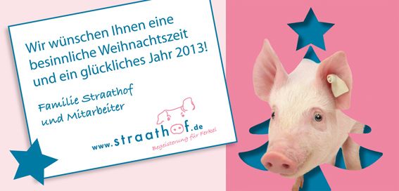

Diese Grundlage zu seinem wichtigsten strategischen Vorhaben, dem Masterplan zur Land- und Ernährungswirtschaft, hat erstmals einen öffentlichen Raum zur Kommunikation zwischen teilweise sehr konträren Positionen eröffnet.
Denn auf der einen Seite arbeitet die Landwirtschaft und auf der anderen Seite leben davon betroffene Einwohner.
Bisher hat dieser Zustand die Fronten verhärtet.
In der Folge gibt es nirgends mehr ehrenamtliches Engagement für den öffentlichen ländlichen Raum in MV als bei den Bürgerinitiativen (unter anderen gegen Massentierhaltungsanlagen).
"Reden soll helfen, Sichtweisen kennenzulernen und sich zu ihnen positionieren zu können."
Dieses Kommunikationsverständnis sollte weiter die Grundlage bleiben bei der Suche nach optimalem Freiraum für Mensch und Tier.
Diesen meinen persönlichen Wunsch nenne ich in der Hoffnung darauf, dass wir eine Lösung für eine Frage finden:
"Wie kann es sein, dass innerhalb der EU ein Herr Straathof seine Ferkelfabrik am Tollensetal in MV bauen konnte aber nicht in Gelderland in seinem Heimatland?"
Die Antwort "MV tut gut" reicht mir derzeit noch nicht.
[Anhang: <!-- ia0 -->weihnachtskarte2012.jpg<!-- ia0 -->]
